Bevezetés
Ez a kis leírás egy kedvcsináló ahhoz, hogy a még kevésbé elkötelezett olvasók is úgy döntsenek, nekilátnak robotot építeni, programozni. Egyúttal a gyakorlottabbaknak is próbálok ötleteket, motivációt adni a folytatáshoz, illetve az együtt gondolkodáshoz.
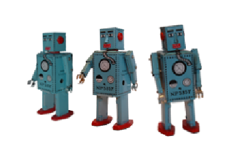Miért?
Az első kérdés, hogy miért is érdemes a robotokkal foglalkozni. Itt a távoli jövőbe nézések, illetve hosszadalmas bla-bla helyett csak annyit szeretnék mondani, hogy egész egyszerűen érdekes a témakör. A robotok nem csupán az elhivatottak számára jelentenek vonzódást, hanem a science-fiction-ök, gyerekjátékok témaválasztása alapján 5-99 éves korig bárki másnak is. Ezen kívül a szórakozva tanulás egy jó példája a robotika, hasznos ismereteket lehet megszerezni a mechanika, az elektronika, a programozás területéről. Az időtöltés eredménye kézzelfogható, az amerikai "been there, done that" érzést, tehát a jól végzett munka örömét képes adni, ami ráadásul kifejezetten aktuális, robotokkal foglalkozni divatos.
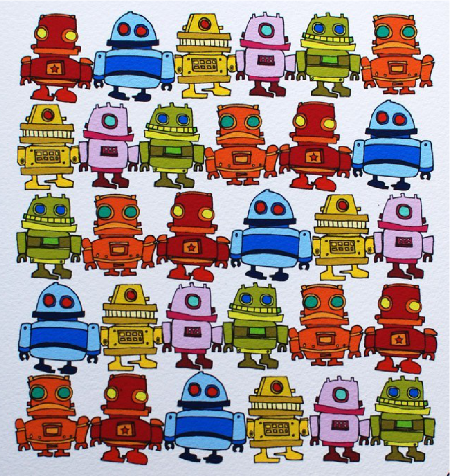Kicsit oktatáspolitikai szempontból nézve, de apolitikusan vizsgálva a kérdést azt mondhatjuk, hogy amennyiben jóléti társadalmat szeretnénk építeni egy olyan országban, ahol különösebb természeti erőforrás nincsen, a népesség nem túl nagy és a napi használati tárgyak jó részét külföldön állítják elő, muszáj valamilyen fizetőeszközt találni, amivel legalább egyensúlyba hozható a mérleg. Ez innovatív, egyedi értéket előállítani képes, képzett emberekkel lehetséges.
Hogyan?
A miért után a hogyanra térve elmondhatjuk, hogy a helyzet folyamatosan javul, számtalan elektronikai bolt valóságosan és virtuálisan is rendelkezésre áll, egyre nagyobb tudású, relatíve egyre olcsóbb alkatrészeket lehet beszerezni. Rengeteg könyv, tutorial, szakfolyóirat található a témában, az interneten elkészült robotok komplett építési leírását, összeszerelését, működését bemutató videókat lehet megnézni. Angolul persze érdemes megtanulni, legalább alapszinten. Illetve természetesen itt a szakosztály, mely a fent megfogalmazott céloknak megfelelően próbál segíteni mindenkinek.
| 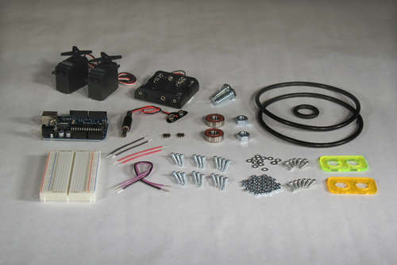 | 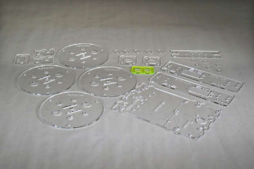 |
| 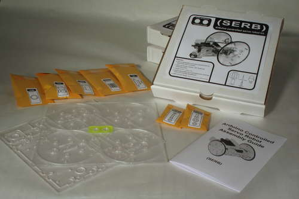 | 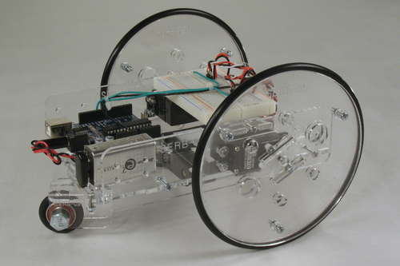 |
Az előadás során az egyéves robotika.blog.hu-ról, a szakosztály általam írott blogjából kiválogatott néhány érdekesebb bejegyzésről fogok beszélni (csatlakozni a szerzőgárdához bármikor lehet). Bár a bejegyzések általában valami aktualitáshoz kapcsolódnak, itt inkább egy fejlődéstörténetet mutatok be, no nem irodalmi, hanem szakmai értelemben: az egyszerűbb feladatoktól a komolyabbak felé haladva, ahogy remélhetőleg egyre többen teszik ezt meg.
Játék az egész!
Kezdjünk először egy kis játékkal!
Legegyszerűbben és talán legolcsóbban robotokkal számítógépes
játékokon keresztül lehet megismerkedni. Ilyen játék a képen is
látható Colobot,
melyben egy háromdimenziós sci-fi történet részesei
lehetnek a kamaszok, akiknek űrhajósként az a feladata, hogy robotok
segítségével egy bolygót lakhatóvá tegyenek. Az egyre nehezebb
feladatok során kisebb programokat kell írni, amivel a robotokat,
illetve a bázis egyéb berendezéseit lehet irányítani, megküzdve az
elemekkel és az idegenekkel is.
Ezen kívül még számos hasonló játékhoz lehet hozzájutni, annak idején
a Quake-ben is volt felület a karakterek/bot-ok programozására.
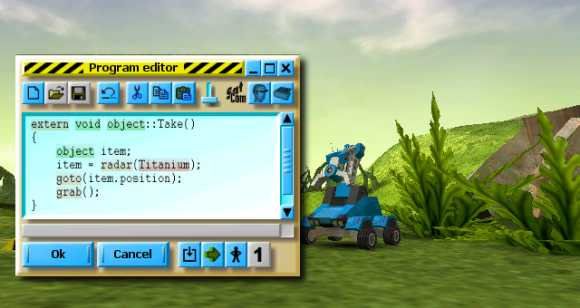
Játéknál természetesen többek azok a szimulátorok, melyekben valódi robot nélkül lehet a programozási feladatra koncentrálni. Ezek eltérő részletességűek lehetnek, két kutatásra is alkalmas környezet a következő képeken látható, a Webots és a Player/Stage.
| 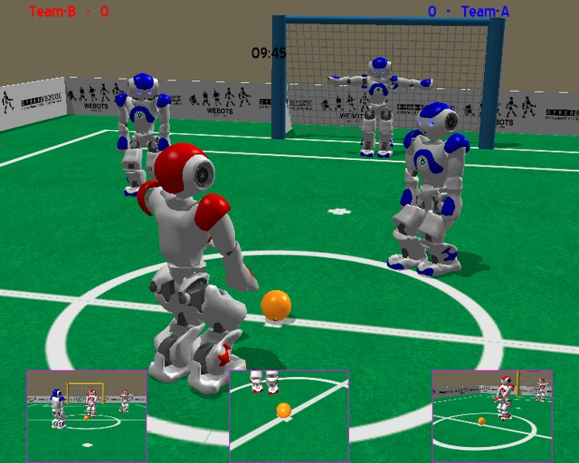 | 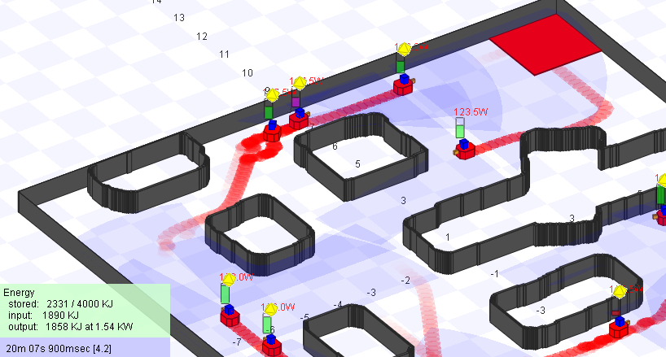 |
A valóságba kilépve egy drágább játék áráért jó minőségű játékrobot vagy robotjáték kapható, a LEGO WeDo. Az 5 és 7 éves fiúkból álló tesztcsoportom alapján úgy tűnik, hogy olvasni sem tudó kicsiknek is szórakoztató feladatokat képes adni a játék. A készítendő kis robot működését egy motivációs film mutatja be, az egyszerű kis programok a szekvenciánál kevéssé bonyolultabbak, ugyanakkor a gyerekek logikus gondolkodását láthatóan fejlesztik.
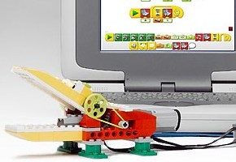Játék nagyobbaknak
A WeDo után következhet a Mindstorms NXT, amit valószínűleg senkinek nem kell bemutatni. A nemrég megújult csomaggal felnőttek is jól szórakozhatnak. A youtube-on se szeri, se száma az NXT-s videóknak, melyek dominósort építő, sudokuzó vagy éppen Rubik-kockát kirakó robotokat mutatnak be, ahogy az alábbi képeken is látható.
| 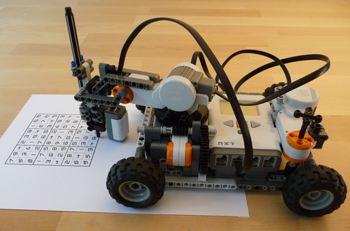 | 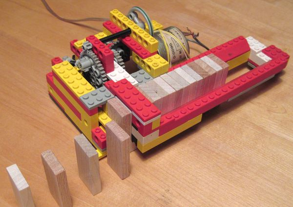 |

|
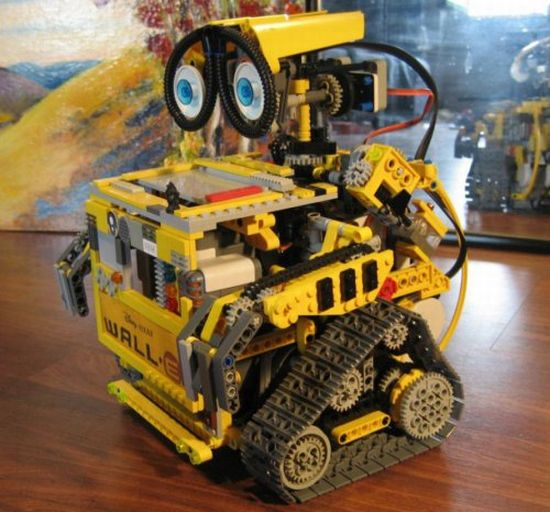 |
Az év során bemutatott NXT-s filmek közül egy szinte találomra kiválasztotton is jól látható, hogy az alapcsomag feladatain kívül lehet érdekes robotot készíteni, esetünkben egy SegWay módjára egyensúlyozó kétkerekű járműről van szó.
Ha nem játékot szeretnénk venni, amiből robotot is lehet építeni, hanem valódi robotot, akkor is számtalan lehetőségünk van, egyik ilyen az ELTE-n is megtalálható tank formájú Surveyor SRV-1 Blackfin. Pár hét alatt ezzel a robottal sikerült egy távirányításos kamerát, egy fénykövetőt és egy szőnyeg szélét követő járművet összehoznom. Az alábbi videó ebből mutat egy kis részletet, egyúttal azt is, hogy a robot mit látott belülről a körbejárás során.
Építsünk valami egyszerűt!
Ha nem csupán programozni szeretnénk, hanem építeni is, képességeinkhez mérten szintén széles a választék. Két kis nyomtatómotor és egy forrásztópáka kell a PC-s egérből készített robothoz, mely a bajszaival érzékeli a falat és kitér előle.
Az általam készített kartonrobot sem sokkal bonyolultabb: két motor, egy szonár az akadályérzékeléshez, valamint egy Arduino Duemilanove áramkör a robot irányításához. Itt a hangsúly az elektronikán van, nem a konstrukción, az komolyabb robotra is cserélhető.
Ilyen komolyabb példa az Arduino Controlled Servo Robot, melynek alkatrészcsomagja korábbi képeken már megjelent, és itt a jobb oldali képen látható. Ennél már az Arduino csupán motorvezérlő, a döntéséket a robotra helyezett laptop hozza.
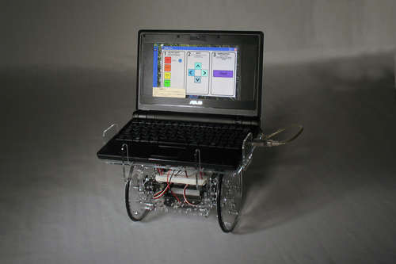Az utóbbi robot elkészítése óta eltelt két év, így már van ennél jobb megoldás: a robotot már hasonló képességű mobiltelefonról is lehet irányítani, ahogy az a következő videón is látható, mely valódi killer application a robotprogramozás területén.
A következő két robot pedig arra példa, hogy nem feltétlenül kell összetett robotot készítenünk, hogy az eredmény mégis sokakat érdekeljen, elég egy jó ötlet is. Az alábbi videók elég sok híroldalra felkerültek megjelenésük idején. Az első robot egy az enyémnél is butább kartonrobot, melynek a parkon kellett átjutnia a sétálók segítségét igénybe véve, amire csupán a kis zászlóján lévő szöveg utalt. A második robot egy művészi koncepció, de szerintem a Váci utcába kiállva hamar visszahozná az árát.
Építsünk valami érdekeset!
Az eddigieken továbblépni egyedül már csak sok hónapos munkával lehet, alapos tervekkel és az eddigieknél nagyobb befektetéssel. Ilyen kísérlet például a következő, amiben egy Emotiv fejhallgatószerű, agyhullámokat figyelő készüléket és egy Rovio robotot használt fel a fejlesztő, hogy skype-on keresztül irányítsa, és így aggódó/szomorú gondolatokra elinduljon, fejelfordításra elfordulással reagáljon, biccentésre pedig kinyissa, becsukja a kameráját.
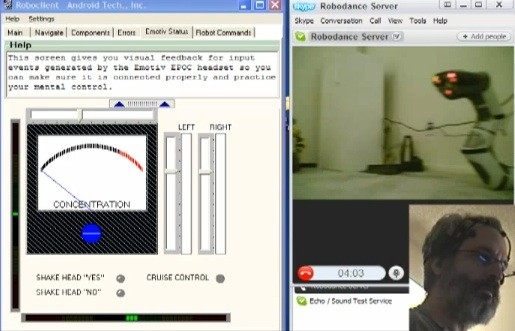
A tavalyi robotnapon betegség miatt elmaradt, aztán tavasszal
szemináriumon elhangzott a Debreceni Egyetemről érkezett Fazekas Attila előadása többek között egy
sakkozó robotról. A szándékosan nem
kifejezetten erősen játszó MI-ben elsősorban az volt az érdekes, hogy
az emberszerű arc interakcióra késztető megjegyzéseire az emberi
játékosok miként reagáltak. Bizony volt olyan eset, amikor vita
alakult ki ember és gép között.
Az alábbi videókon az előbbihez hasonló, interneten fellelhető sokféle sakkozó robotból
mutatok be kettőt.
A következő videón látható robotok egy kutatócsoport munkái, közös bennük, hogy a falmászás különböző módozatait valósítják meg. Az első robot kerekein mágnesek találhatók, így például búvárok helyett lehetne alkalmazni bombák keresésére hajók falán. A második robot egy a biológiából ellesett módszert alkalmaz: csigákhoz hasonlóan a saját maga által kibocsátott ragacsos nyálkarétegen megy fölfele. A harmadik típus a 3M ragasztószalagjait alkalmazza, és nagyon sima felületeken így üvegen vagy táblán képes felmászni. A negyedik, ismét biomimetikus robot a macskák vagy rágcsálók karmait utánozva kapaszkodik meg az érdesebb felületeken.
Jöhet az egyetem!
Már az előző példákból is látszott, hogy igazán komoly munkát kutatócsoportban, illetve a felsőoktatásban lehet végezni, ahol a szükséges erőforrások rendelkezésre áll(hat)nak. Erre a szintre eljutva további előny, hogy csapatban dolgozva az összetettebb problémákat részfeladatokra osztva lehet megoldani. Így lehetne például robotfoci csapatot építeni, amiről tavaly a graz-i világbajnokság kapcsán már sokat beszélgettünk.
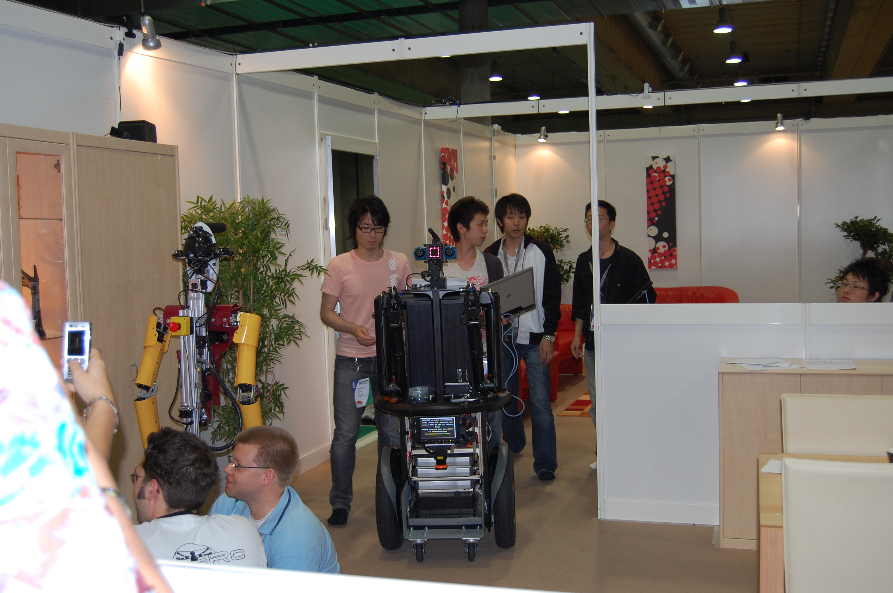Ehhez hasonló lehetőség az International Aerial Robotics Competition (és még sok más verseny), melyben a legutóbbi feladat során egy épületbe kellett az ablakon behatolni, majd az egyik irodában az asztalon megkeresni és kicserélni egy pendrive-ot, mindezt 15 perc alatt.
A repülő robotok egy rendkívül érdekes felhasználását mutatja be a következő videó az MIT-ról. A kisméretű robotok rajának minden eleme különféle színekben képes világítani, szervezett mozgásuk egy valódi háromdimenziós képernyőt adhat ki.
Az alábbi videón megjelenő Cornell egyetemen készített robotkar univerzális abban az értelemben, hogy tetszőleges alakú tárgyat képes megfogni. A gumilabdában kávézacc van, ami felveszi a megfogni kívánt tárgy körvonalát, majd a levegőt a kávé részecskéi közül kiszívva a fogás biztossá válik.
Az előbbieknél könnyebbnek tűnik sikert elérni a távgyaloglás versenyében, amiből akár magyar bajnokságot is lehetne szervezni. A következő videó ismét, a Cornellről, a csúcstartó robot korábbi rekordjának felállítása közben készített felvétel.
A végtelenbe és tovább!
A kutatás újabb szintje lehet nemzetközi kutatócsoportokhoz csatlakozni, és hozzájutni olyan többszázezer dolláros robotokhoz, mint az európai kooperációban készülő ICub vagy a kaliforniai WillowGarage által készített PR2. ICub-ot olasz kutatók fejlesztették tovább, hogy íjászkodni is képes legyen. Ugyan az embereknek már az is nehézséget okoz, hogy kétszer pontosan ugyanolyan módon (kéztartás, irányzék, erősség) lőjjék ki a vesszőt, ez a robotnak - inverz kinematikát felhasználva - nem okoz gondot, ahogy az alábbi videón is látszik. Az eredményt képfeldolgozás során értékeli ki az ICub és ezek alapján alakítja a következő lövést.
A WillowGarage-ről egy önálló cikket lehetne írni, amely röviden ismertetné a ROS robot operációs rendszert, a PR2 robotot, és az OpenCV-t, melyet mind ennél a cégnél fejlesztenek. Ezúttal befejezésül csupán megmutatom azt a robotot, ami az emberiség legfontosabb problémájátt megoldja: sört hoz a hűtőből.
Persze ez a megoldás sem tökéletes még, és nyilván vannak még érdekes feladatok, szóval bárki nekikezdhet a munkának, akár már ma is!